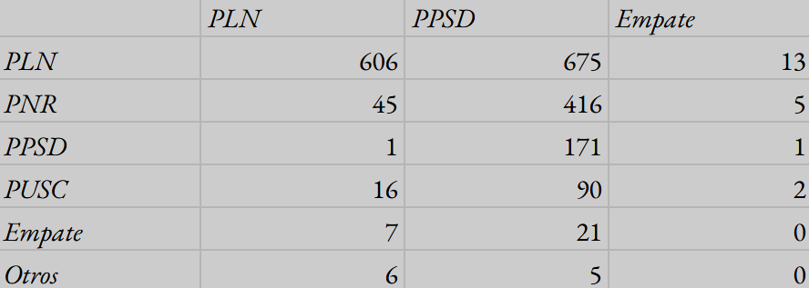
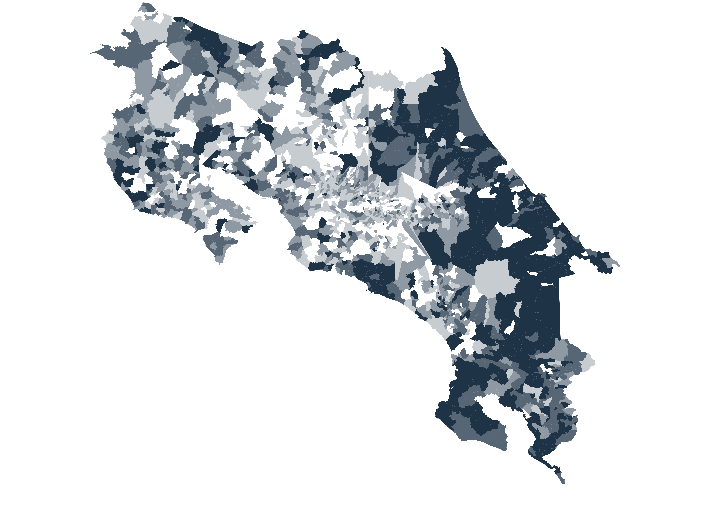
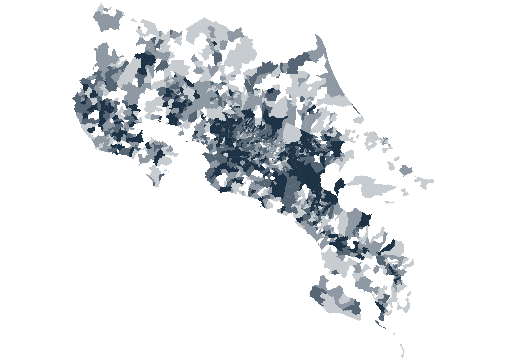

Las raíces de la coyuntura nacional
Un análisis de las elecciones costarricenses de 2022
Para 2022, Costa Rica se encontraba sumida en una de las peores crisis económicas, sociales y morales de su historia. El desarrollo de la pandemia del COVID-19 no hizo más que agudizar la percepción de fracaso en el gobierno de Carlos Alvarado, quien fue víctima de la opinión pública. Las medidas dirigidas desde la presidencia continuaron el apagón educativo que ya había iniciado debido a las protestas del sector público. Sumado a esto, el Movimiento Rescate Nacional, motivado por el rechazo a la reforma fiscal, había paralizado el tránsito en zonas clave del país. La falta de respaldo del presidente a los cuerpos de seguridad durante estas protestas no fue bien recibida por estos. A pesar de ser menores en número, los escépticos de los programas de vacunación también hicieron acto de presencia, denunciando un posible brote de autoritarismo desde la presidencia. No es una exageración decir que, en otro contexto regional, la presidencia de Alvarado no habría concluido de manera convencional.
A pesar de todas estas problemáticas, la lenta recuperación económica dada por haber tenido una de las cuarentenas más largas de la región fue el factor más importante. A vísperas de la elección del nuevo presidente, había una quinta parte de desempleados. Era necesario invertir el rumbo del país; sin embargo, no había un consenso en la naturaleza que tendría este cambio. Dos principios diametralmente opuestos moldearon la comprensión de la política: en primer lugar, un cinismo manifestado en un desprecio generalizado hacia la clase política y sus planteamientos; por otro lado, un idealismo mesiánico que prometía que, tras la salida del PAC, "todo iba a estar bien" y que "nunca era tan oscuro como antes de amanecer". La papeleta de la primera vuelta contenía 25 opciones, algo inédito. Los eruditos fueron rápidos en reconocer que la siguiente elección iba a ser una de las más relevantes. Sin embargo, esto no era cierto para una mayoría que veía con desinterés la campaña. Todo terminaría con un resultado que pocos hubieran imaginado meses atrás. Una nueva era se asomaba, una en la cual el descontento popular era el protagonista. Para entender cómo podemos salir de ella, una introspección a sus orígenes es clave.
I. Candidatos y bases territoriales

José María Figueres debutó su segunda candidatura presidencial apelando a su figura y la nostalgia al bipartidismo, cuyos seguidores aseguraban facilitaba la gobernabilidad del país. Su mayor apoyo durante la primera vuelta se encontró en la entonces tradicionalista península de Nicoya y en regiones con apego histórico al PLN en la Zona de los Santos, los cantones del oeste de San José y Zarcero. Sumado a esto, el hijo del caudillo también registró un resultado consistente, aunque no tan predominante, en las zonas urbanas del Valle Central.

El exministro Rodrigo Chaves lideró una propuesta que prometía hacer de Costa Rica nuevamente "el país más feliz del mundo", enfocándose en su perfil como economista y sin encuadrarse del todo en el espectro político tradicional. A pesar de iniciar la contienda con un apoyo modesto, contó con el respaldo explícito de Pilar Cisneros y el efecto arrastre de su candidatura legislativa. Contrario al desempeño posterior de su movimiento y a la percepción popular, la candidatura inicial de Chaves registró un resultado modesto en algunas de las zonas con mayores índices de pobreza, como el Caribe y los barrios urbano-marginales. En contraparte, fue un segmento de la clase media nacional el que hizo posible su pase a la segunda ronda. La coalición "chavista" inicial se compuso principalmente del Valle del General, la Zona Norte y el Occidente de Alajuela, regiones tradicionalmente escépticas del Liberación Nacional. Cabe destacar que, desde 2006, Occidente había respaldado de forma consistente a Acción Ciudadana; sin embargo, al pasar este partido a un rol secundario, esos votantes migraron hacia una nueva opción anti-establishment.

Fabricio Alvarado, derrotado en la segunda vuelta de la elección de 2018, fue candidato por segunda vez en 2022, esta vez con una nueva agrupación, Nueva República (PNR). Su nueva candidatura careció del protagonismo mediático de su primera contienda. Fue negativamente afectado por la precaria situación económica para la que su discurso no estaba enfocado. A pesar de incluso llegar a finalizar segundo en los primeros cortes de la noche, terminaría quedando fuera del balotaje por dos puntos porcentuales frente a Chaves. El antiguo cantautor obtuvo sus mejores resultados en las zonas fronterizas, donde la inmigración es rampante, el Caribe, barrios como La Carpio y pueblos de mayoría indígena, siendo los evangélicos el factor común entre todos estos.

La ex vicepresidenta Lineth Saborío fue la candidata presidencial de la Unidad, el otro partido bipartidista. Su campaña compartió ciertos enfoques con la de Figueres, ya que prometía estabilidad y apego a la institucionalidad. Fue esta precisa razón la que ocasionó que su electorado compartiera muchas características demográficas con este. Sumado a estas similitudes, Saborío también se impuso en los cantones limonenses de Talamanca y Matina, con fuerte presencia del partido, y en Sarchí, su tierra natal. Simultáneamente, tuvo una debilidad notable en la urbe del país y en la Zona Norte donde Chaves obtuvo sus potenciales votantes. Su candidatura fue la mejor a nivel rural del partido desde la presidencia de Abel Pacheco.

Catapultado a través de las redes sociales y debates, Eliécer Feinzaig prometía desregulación, generación de empleo y una política socialmente liberal. Su candidatura, desconocida semanas atrás, además apelaba explícitamente a la población urbana y votantes antiguos de la Unidad, lo cual fomentó que fuera tachado de candidato de las élites por sus contendientes. La debilidad territorial de su partido impidió que obtuviera márgenes competitivos más allá de la Gran Área Metropolitana.

José María Villalta, diputado por segunda ocasión, fue el representante de la nueva izquierda en 2022. Descartando el socialismo duro y rural de su primera candidatura presidencial, el Frente Amplio se redefinió como la mayor fuerza enteramente progresista del país. A pesar de no ser protagonista en ningún área, el Frente Amplio estuvo presente en el este de San José, suburbios de Heredia, periferia de Cartago y Occidente de Alajuela, también obteniendo antiguos votantes del PAC. Es relevante también visibilizar que Villalta generalmente obtuvo mayor respaldo periférico que Feinzaig.

La participación alcanzó su menor porcentaje a nivel histórico. El marcado desinterés con respecto al comicio terminó con un abstencionismo mayor al 60%, siendo aún mayor en la segunda ronda.
II. La elección legislativa
En la papeleta de diputados, el voto fue definido en gran medida por el arrastre de la elección presidencial. Sin embargo, hubo excepciones, propias del sistema multipartidista que regía el país en aquel entonces. A propósito del lector se destaca el resultado de Recuperando Valores (RV) en distintas localidades del norte de Limón, el Partido Republicano Social Cristiano (PRSC) en Osa, el futuro legislador del Liberal Progresista (PLP) Luis Diego Vargas en su natal Palmares y el partido de gobierno (PAC) en algunas localidades rurales.
III. Segunda vuelta
La primera vuelta de la elección de 2022 terminó con el menor respaldo conjunto entre primer y segundo lugar hasta la fecha. El pase de Figueres era considerado inevitable desde semanas atrás. El de Chaves, una anomalía. En la nueva etapa de la campaña, ambas candidaturas afirmaron que su contrincante de alguna manera representaba el continuismo del gobierno de Carlos Alvarado. Chaves recordaba frecuentemente los escándalos de corrupción de Figueres, atacando su credibilidad. Figueres, por su parte, planteaba que su contendiente era autoritario y machista, aunque si bien estas acusaciones no llegaron al nivel de cuatro años después. Con el fin de atraer a los votantes de Fabricio Alvarado, Figueres y Chaves expusieron posiciones socialmente conservadoras en el balotaje. La importancia de la ideología y agenda de los candidatos fue menor.
Los meses posteriores a febrero también añadieron escándalos novedosos. De Liberación Nacional, destaca el video del “salto al vacío” producido en respaldo a Figueres e involucrando una alusión al suicidio, impopular en los sectores progresistas vitales para el partido. Progreso Social Democrático fue debilitado por haber Pilar Cisneros acusado a la maquinaria de Liberación Nacional de ser capaz de hacer “chorreo de votos” y haberse filtrado una grabación de su candidato presidencial en una aparente declaratoria de amor. Las contrataciones irregulares del gobierno de turno también ganaban mayor notoriedad, beneficiando a Chaves y su retórica que siendo más contundente no se centraba únicamente en la clase política, sino también en los medios de comunicación e instituciones públicas. Los candidatos carecieron de adhesiones sustanciales que pudieran utilizar para asegurar su triunfo. La expectativa de una posible adhesión de Fabricio Alvarado, quien hubiera definido la elección, fue efímera. Esta adhesión terminó sin llegar. Alvarado se limitó únicamente a atacar a Chaves en uno de los mensajes con menos repercusiones en la historia política nacional. Al final, sus antiguos votantes se volcaron por Chaves masivamente, haciéndolo presidente.
IV. Realineamiento y transformación electoral

La coalición victoriosa de Rodrigo Chaves fue más rural que en primera vuelta. Afrontó exitosamente su debilidad inicial en Limón, logrando una victoria en todos sus distritos administrativos. En el cantón de Buenos Aires, dividido equitativamente entre Figueres, Chaves y Alvarado en primera vuelta, logró sumar sus votos iniciales con los de Alvarado ganando más de dos terceras partes de los votantes. Generalmente, su candidatura se alimentó de los antiguos votantes de Alvarado, Saborío y las candidaturas menores, frecuentemente populistas.

Liberación Nacional generalmente registró ganancias competitivas en las localidades con más votantes del Liberal Progresista y el Frente Amplio, especialmente en la urbe. Sumado a esto, Figueres también incrementó sus márgenes en los cantones periféricos de Liberia y Matina, aunque si bien esto no fue suficiente para ganar en ellos.

El crecimiento de Chaves frente al resultado del fabricismo cuatro años atrás no fue homogéneo. Específicamente, en los distritos más acaudalados (San Rafael, Escazú) y pobres (León XII, Tibás), Figueres superó o alcanzó un resultado similar a Carlos Alvarado. Fue la clase media nacional, en zonas como el Valle Central y Occidente de Alajuela, la que movió la balanza a favor de Chaves, quien asumirá la presidencia el ocho de mayo de ese mismo año dándole pie a la Costa Rica del hoy.
Notas sobre los datos: La participación en los centros penitenciarios podría resultar imprecisa debido a que su padrón está sujeto a cambios constantes. En el Hogar de Larga Estancia Fray Casiano de Madrid no se registraron votos en las juntas receptoras correspondientes. Se agradece al usuario de X Timothy Hormigos (@bnstim) por proveer la plantilla para las ventanas emergentes del mapa interactivo.